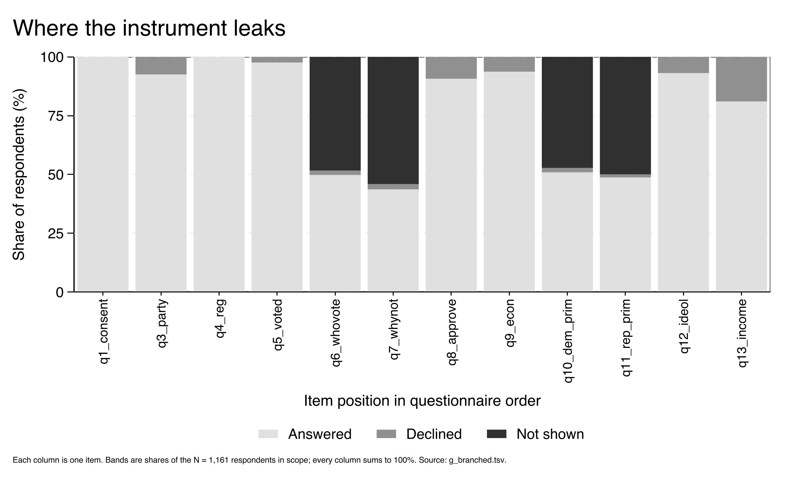
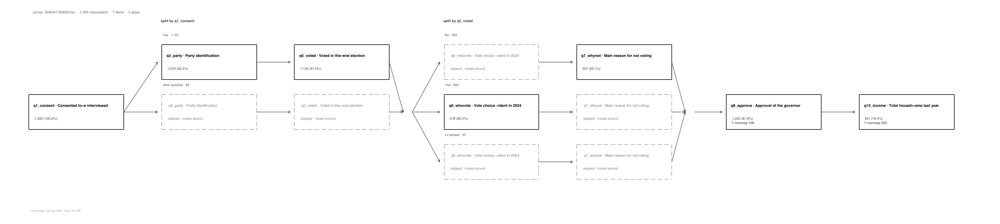

surveymap is a Stata command that maps how respondents moved through a survey. For every item it separates the people who answered from the people who declined and from the people the skip logic routed past.
Every page below comes from a fake 1,200-person poll with skip logic: a
consent question, a party question, and a voting question that routes
non-voters around the vote-choice items. Running gallery/runall.do
in the repository regenerates every file here, so each page shows the
command's own output.
The spine runs left to right in questionnaire order. Where a gate splits the sample, the spine fans into lanes, and a dashed grey box marks a question that lane was never shown. Hover any box for its full record; the page also opens with a reading guide written in the survey's own item names.
The live page is g_map.html; g_profile.html splits the same survey by respondent behaviour instead of by an answer.
The flow map above follows the routing; this view follows the answers. Each item becomes a column, each common answer becomes a block, and each ribbon counts the respondents who gave one pair of answers on neighboring items. The table under the figure lists the most common complete paths end to end.
The live page is g_paths.html. In
g_paths_hl.html, highlight() keeps
the two most common paths in full colour and fades the other ribbons. In
g_responses.html, the routing map draws each
item's answer shares inside its box.
For a questionnaire with too many items for a flow map, the band chart draws one thin column per item, split into answered, declined, and not shown, so every column stacks to the whole sample. A wide block of not shown marks a filter working as designed; a growing band of declined marks people who saw the questions and stopped answering them.

Stata's own graph engine draws the map as a .png or
.svg for a paper or a slide.

The repository
contains all of these files, regenerated by gallery/runall.do,
together with the help file and the 384-check test battery.